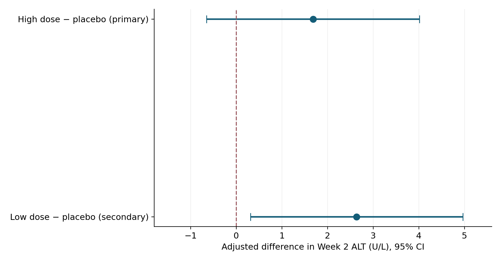
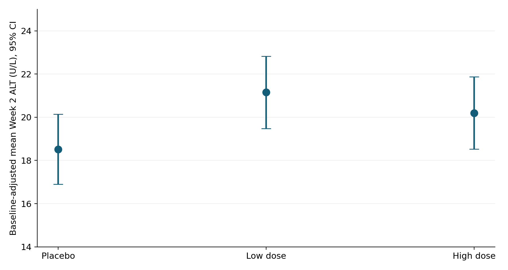
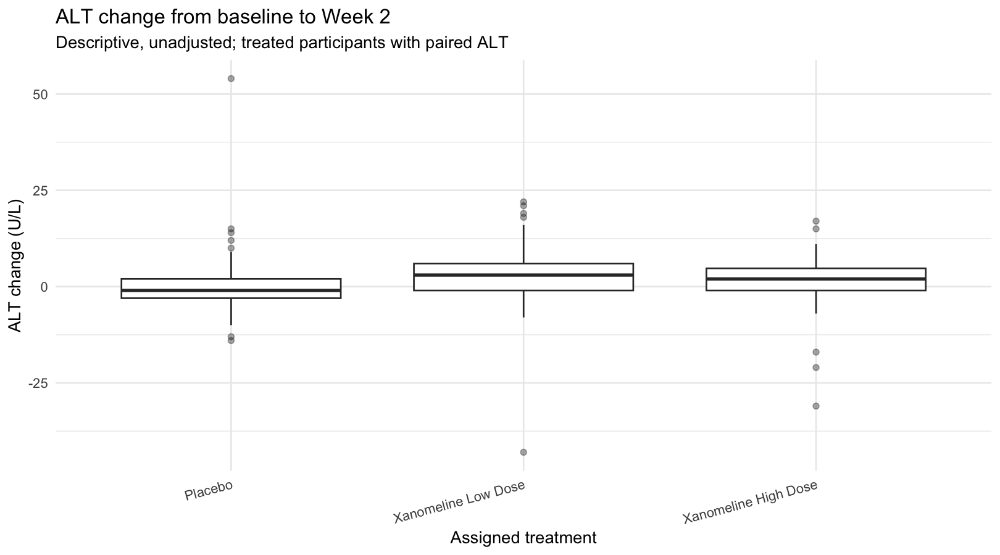
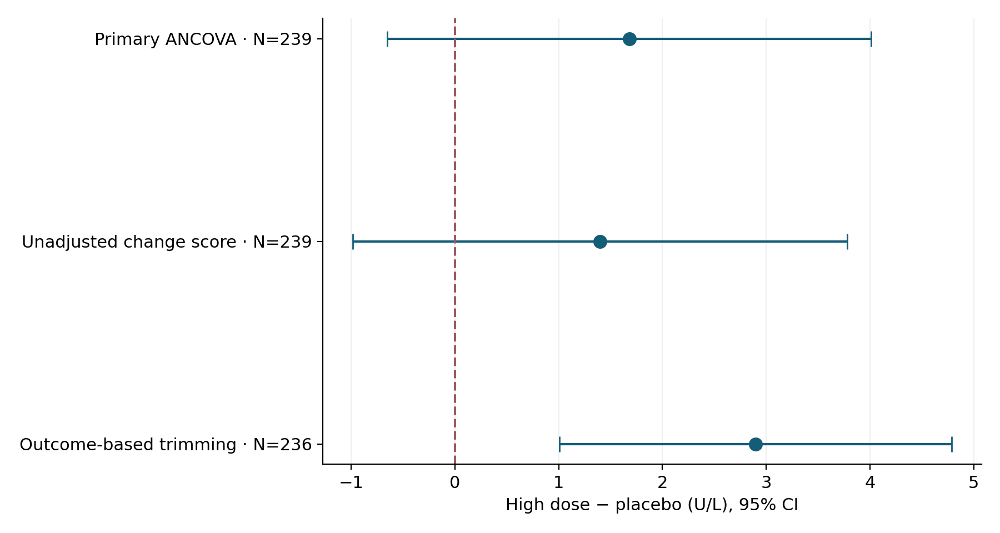
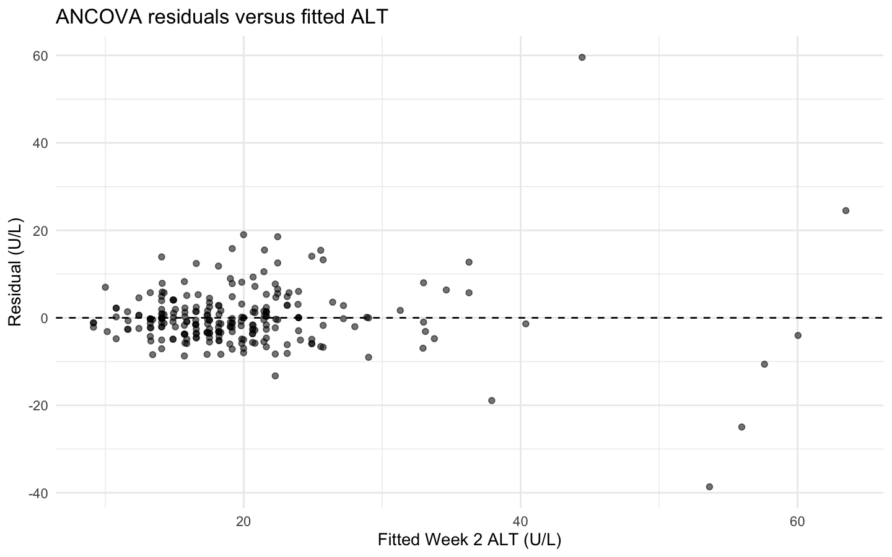
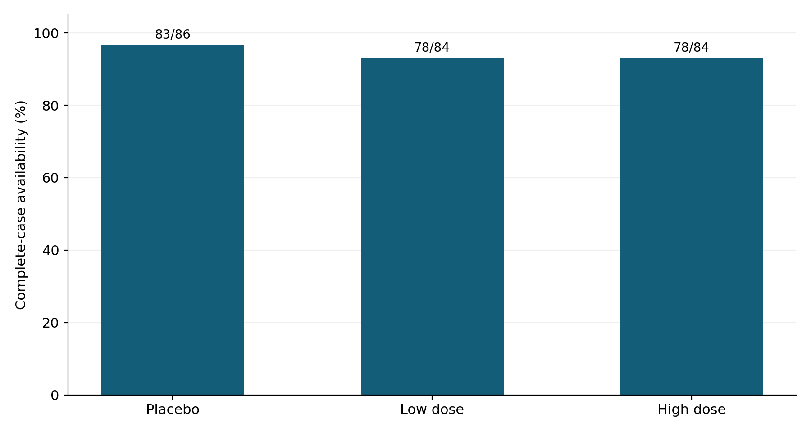

Does xanomeline affect early liver enzyme levels?
An end-to-end educational analysis of Week 2 alanine aminotransferase (ALT), from CDISC example data to analysis-ready datasets, baseline-adjusted comparisons, reproducible reporting and quality review.
CDISC Pilot Study · educational retrospective analysis · not a regulatory submissionExplore the actual results ↓
One narrow question. A transparent answer.
Among treated participants in the CDISC Pilot Study, does the group assigned to high-dose xanomeline have a higher mean Week 2 ALT than placebo after adjusting for baseline ALT? Low-dose and ordered-dose comparisons were secondary and exploratory.
Primary estimand
The difference in baseline-adjusted mean Week 2 ALT between the assigned high-dose and placebo groups, reported in U/L with a two-sided 95% confidence interval.
Assignment-based comparisonEndpoint choice
Week 2 (VISITNUM = 4) was selected as the first scheduled follow-up meeting a project-defined ≥80% ALT coverage threshold across arms. The cutoff was a project choice, not a CDISC requirement.
Visit selected from coverageFrom source records to inspectable outputs
Each downstream estimate is linked to an explicit input, derivation and QC step. The original Week 2 ALT analysis is preserved; a separate full-visit, 47-parameter laboratory analysis dataset was subsequently built and internally reviewed. The expanded dataset is an educational exchange candidate, not a validated submission.
Baseline-adjusted ANCOVA
Week2_ALT = β₀ + β₁ × LowDose + β₂ × HighDose + β₃ × Baseline_ALT + εPlacebo is the reference category. The primary contrast is β₂. The complete-case model contains 239 participants, with no missing-value imputation; adjusted means compare groups at a common baseline.
The primary comparison does not establish a nonzero difference
All estimates below are from the saved R statistical outputs. Positive differences indicate higher adjusted Week 2 ALT than placebo.
Placebo comparisons · ANCOVA

| Comparison | Difference, U/L | 95% CI, U/L | p-value |
|---|---|---|---|
| High dose − placebo · primary | +1.68 | −0.65 to 4.01 | 0.1569 |
| Low dose − placebo · secondary | +2.64 | 0.31 to 4.96 | 0.0266* |
*Secondary p-value is nominal and not adjusted for multiplicity. Primary confidence interval includes zero; it neither demonstrates an increase nor proves absence of an effect.
Model-adjusted means

At a shared baseline ALT: placebo 18.52 U/L, low dose 21.15 U/L, high dose 20.20 U/L.
Observed change distributions

Descriptive only; primary treatment estimates come from baseline-adjusted ANCOVA.
Exploratory ordered-dose trend
Assigned-arm rank (placebo = 0, low = 1, high = 2) slope: +0.86 U/L per rank step (95% CI −0.31 to 2.03; nominal p = 0.1492). Equal rank spacing is an assumption and cannot be interpreted as a relationship with individual administered dose.
Analysis decisions change the inference
The primary analysis was not replaced by more favorable exploratory alternatives. We report contrasting results and their methodological limitations.
High dose versus placebo across models

| Method | N | Difference, U/L | 95% CI | p-value |
|---|---|---|---|---|
| Primary ANCOVA | 239 | +1.68 | −0.65 to 4.01 | 0.1569 |
| Unadjusted change-score comparison | 239 | +1.40 | −0.98 to 3.78 | 0.2485 |
| Outcome-trimmed ANCOVA · exploratory | 236 | +2.90 | 1.01 to 4.79 | 0.0028 |
Log-transformed outcome: different scale, different question
High-dose versus placebo adjusted ratio 1.157 (95% CI 1.055–1.268; nominal p = 0.0020); low-dose ratio 1.174 (95% CI 1.071–1.286; nominal p = 0.0007). Ratios are multiplicative estimates, not U/L differences. Disagreement with the original-scale model makes assumptions and influential data important to review.
Reconciled calculations, unresolved model assumptions
Numeric QC checks were run against the uploaded analysis outputs. Statistical model suitability and safety interpretation still require review.
Data and derivation checks Passed
- Saved ANCOVA contrasts match independent re-derivation within 10⁻⁶.
- ALT standard unit is U/L throughout the audited ALT records.
- No duplicate baseline or Week 2 records in the QC extracts.
- Paired population and diagnostic row counts both equal 239.
- Twelve assignment/actual-treatment mismatches are retained and disclosed.
Review flags Open
- 4 observations have |standardized residual| > 3.
- 10 observations exceed the screening threshold Cook's D > 4/239.
- Maximum Cook's distance is approximately 1.083.
- 13 participants have missing Week 2 ALT; 2 have missing baseline ALT.
- No validated participant-level ALT > 3× ULN classification or responder ML model.
Original-scale residual diagnostics

Cook's distance and standardized-residual thresholds are screening heuristics, not exclusion criteria. The appropriate next analysis would review data provenance and consider more robust prespecified modeling, without selecting methods for a preferred result.
Missingness by assigned arm

| Assigned group | Treated | Complete cases | Coverage | Missing Week 2 |
|---|---|---|---|---|
| Placebo | 86 | 83 | 96.5% | 3 |
| Low dose | 84 | 78 | 92.9% | 4 |
| High dose | 84 | 78 | 92.9% | 6 |
Low dose also has two missing baseline measurements. Complete-case analysis has no imputation; informative follow-up cannot be ruled out.
From an ALT extract to a multi-parameter ADLB candidate
The original Week 2 ALT analysis remains unchanged. A separate full-visit laboratory analysis dataset was subsequently built from example study data. This is an educational development and conformance-review exercise, not a regulatory submission.
Expanded dataset
| Laboratory records | 59,580 |
|---|---|
| Subjects | 254 |
| Parameters | 47 |
| Internal programmed checks | 10/10 passed |
| Additional independent internal checks | 22 passed; 2 review flags |
| XPT candidate read-back | 31/31 variables matched; blank/missing character representations normalized for comparison |
Open review and release gates Not submission ready
- 917 selected rows without baseline, spanning 178 subject–parameter pairs; no values imputed.
- 1,664 source rows have no assigned analysis visit; none was selected for analysis.
- 12 baseline-labeled unmapped rows require collection/dose timestamp review.
- Urine-test 0/1 code meanings, provisional population definition, and derivation metadata require approval.
- Formal conformance validator, approved Define-XML, full independent derivation and release sign-off have not been completed.
Public documentation: Validation status and decision register · ADLB scope and limitations. No individual lab results or source keys are published.
An auditable case study, not a regulatory claim
The site includes selected aggregate results, figures, and a public-facing validation-status summary. Its original reproducibility bundle contains five R scripts; later ADLB scripts and source-level datasets are not included in this GitHub Pages package. No participant-level files are distributed.
Reproduction pathway
The included scripts use the public example `pharmaversesdtm` data. Run 01 → 02 → 03 → 04 → 05 from the project root after installing the required R packages and checking the package version.
Saved execution environment: R 4.6.1; pharmaversesdtm 1.5.0; emmeans 2.0.4. No environment lockfile is supplied.
Download aggregate comparison CSV ↗Scope and limits
- Educational, retrospective analysis using example clinical trial data.
- Provisional safety population based on first exposure date, with limited EX evidence reconciliation.
- Expanded 47-parameter, full-visit ADLB candidate constructed and internally checked; formal CDISC conformance and submission readiness are NOT established.
- Residual assumptions and missingness sensitivity unresolved.
- No evidence here of individual hepatotoxicity events or confirmed exposure-response.